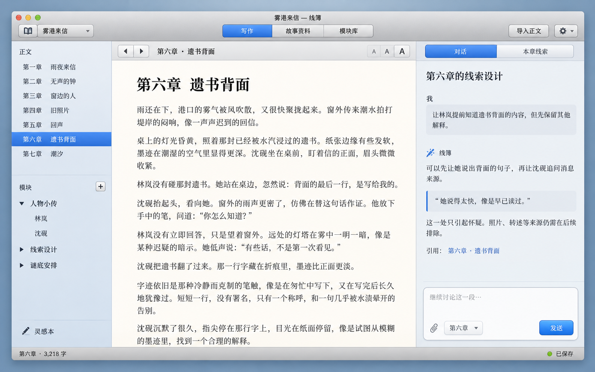
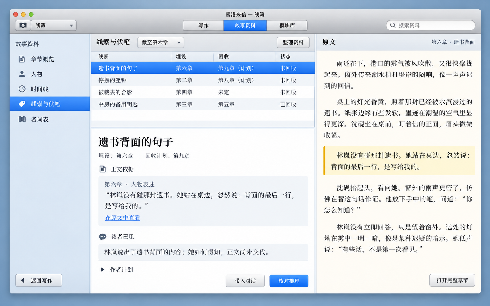
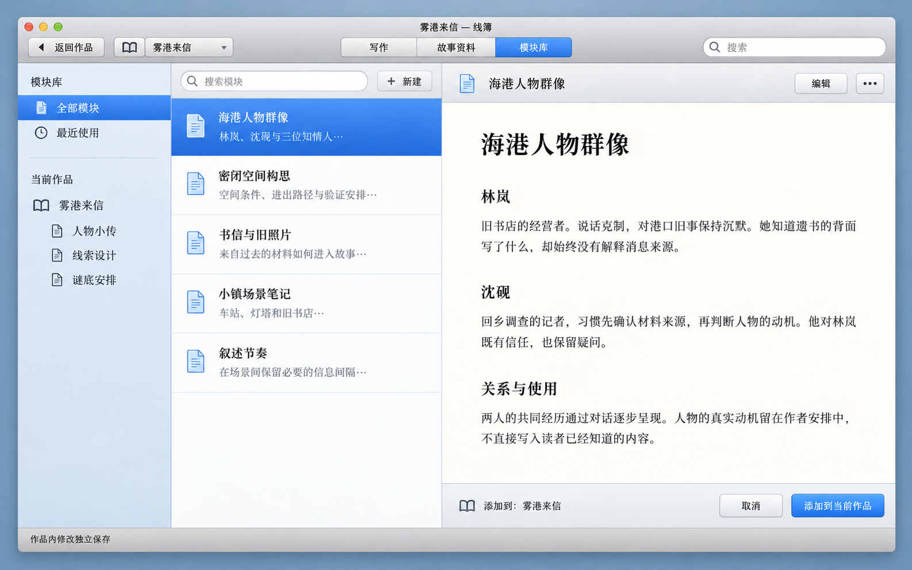

2026-10-27 · 视觉探索，未定稿。示例内容与操作不代表已交付功能；点击图片查看原图。
01 写作台
章节、正文与对话并列；银灰控件与暖白正文区分开。

02 线索与原文对照
参照 1.0 计划：同页核对正文依据，单独折叠作者计划。

03 模块库
自由内容模块，列表与文档预览并列，显示当前作品归属。

2026-10-27 · 视觉探索，未定稿。示例内容与操作不代表已交付功能；点击图片查看原图。
章节、正文与对话并列；银灰控件与暖白正文区分开。

参照 1.0 计划：同页核对正文依据，单独折叠作者计划。

自由内容模块，列表与文档预览并列，显示当前作品归属。
